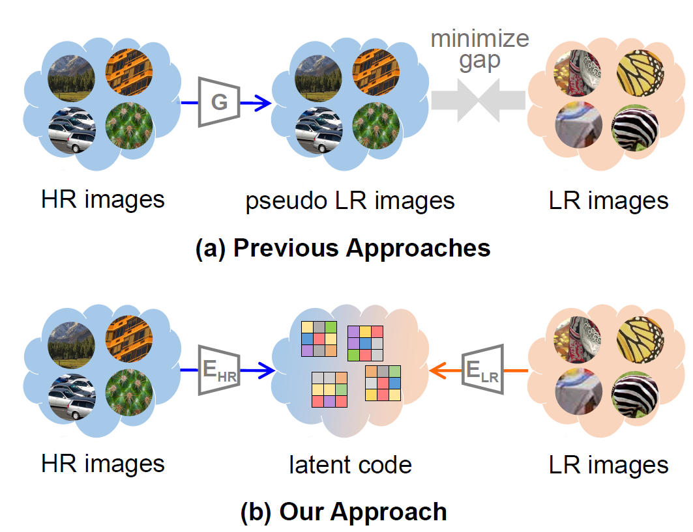
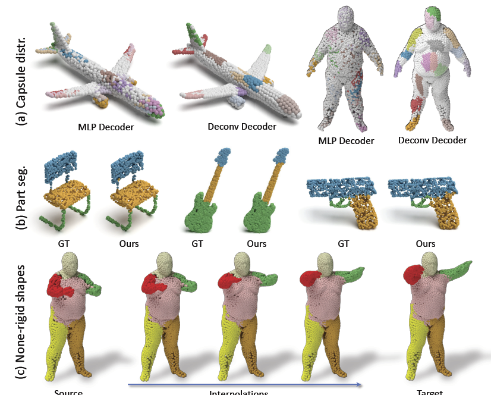
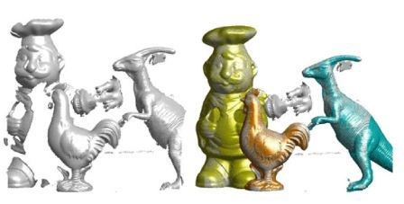

News and Events
March 2024
5 papers are accepted by CVPR 2024, congratulations to all co-authors.
May. 2024
We are organizing the 2nd ICPR Competition on Moving Object Detection and Tracking in Satellite Videos at ICPR 2024, more can be found here.
January 2024
We are organizing the NTIRE 2024: Stereo Image Super-Resolution Challenge and the NTIRE 2024: Light Field Image Super-Resolution Challenge in conjunction with CVPR 2024, more can be found here.
Brief Bio
Yulan Guo is a full Professor with the School of Electronics and Communication Engineering, Sun Yat-sen University, Shenzhen, China. His research area lies in computer vision and robotics, particularly in 3D reconstruction, 3D scene parsing, low-level vision, and robotic perception. He has authored over 200 articles at highly referred journals and conferences. He served as a Senior Area Editor for IEEE Transactions on Image Processing, and an Associate Editor for the Visual Computer, and Computers & Graphics. He also served as an area chair for CVPR 2023/2021, ICCV 2021, ECCV 2024, NeurIPS 2024, and ACM Multimedia 2021. He organized over 10 workshops, challenges, and tutorials in prestigious conferences such as CVPR, ICCV, ECCV, and 3DV. He works closely with several top-tier IT companies such as Alibaba, Huawei, and DJI. He is a Senior Member of IEEE and ACM.
[Github, Google Scholar]
[Github, Google Scholar]
Books & Chapters
2019
2015
2D and 3D Feature Selection for Face Recognition
Encyclopedia of Electrical and Electronics Engineering. John Wiley and Sons. 1-54, 2015.
Publications
2024
Unsupervised Degradation Representation Learning for Unpaired Restoration of Images and Point Clouds
IEEE Transactions on Pattern Analysis and Machine Intelligence, 2024.
Deep Learning for Visual Speech Analysis: A Survey
IEEE Transactions on Pattern Analysis and Machine Intelligence, 2024.

Learning Coupled Dictionaries from Unpaired Data for Image Super-Resolution
IEEE/CVF International Conference on Computer Vision and Pattern Recognition (CVPR), 2024.
LoS: Local Structure Guided Stereo Matching
IEEE/CVF International Conference on Computer Vision and Pattern Recognition (CVPR), 2024.
L4D-Track: Language-to-4D Modeling Towards 6-DoF Tracking and Shape Reconstruction in 3D Point Cloud Stream
IEEE/CVF International Conference on Computer Vision and Pattern Recognition (CVPR), 2024.
DriveWorld: 4D Pre-trained Scene Understanding via World Models for Autonomous Driving
IEEE/CVF International Conference on Computer Vision and Pattern Recognition (CVPR), 2024.
Density-aware Augmentor Boosts 3D Synthetic-to-Real Point Cloud Unsupervised Domain Adaptative Segmentation
IEEE/CVF International Conference on Computer Vision and Pattern Recognition (CVPR), 2024.
ACRF: Compressing Explicit Neural Radiance Fields via Attribute Compression
The International Conference on Learning Representations (ICLR), 2024.
2023
GeoTransformer: Fast and Robust Point Cloud Registration with Geometric Transformer
IEEE Transactions on Pattern Analysis and Machine Intelligence, 2023.
RoReg: Pairwise Point Cloud Registration with Oriented Descriptors and Local Rotations
IEEE Transactions on Pattern Analysis and Machine Intelligence, 2023.
Exploring Fine-Grained Sparsity in Neural Networks for Efficient Inference
IEEE Transactions on Pattern Analysis and Machine Intelligence, 45(4): 4474-4493, 2023.
You only Train Once: Learning General and Distinctive 3D Local Descriptors
IEEE Transactions on Pattern Analysis and Machine Intelligence, 45(3): 3949-3967, 2023.
BUFFER: Balancing Accuracy, Efficiency, and Generalizability in Point Cloud Registration
IEEE/CVF International Conference on Computer Vision and Pattern Recognition (CVPR), 2023.
PointCMP: Contrastive Mask Prediction for Self-supervised Learning on Point Cloud Videos
IEEE/CVF International Conference on Computer Vision and Pattern Recognition (CVPR), 2023.
3D Spatial Multimodal Knowledge Accumulation for Scene Graph Prediction in Point Cloud
IEEE/CVF International Conference on Computer Vision and Pattern Recognition (CVPR), 2023.
Context-aware Alignment and Mutual Masking for 3D-Language Pre-training
IEEE/CVF International Conference on Computer Vision and Pattern Recognition (CVPR), 2023.
Robust Multiview Point Cloud Registration with Reliable Pose Graph Initialization and History Reweighting
IEEE/CVF International Conference on Computer Vision and Pattern Recognition (CVPR), 2023.
Semi-Weakly Supervised Object Kinematic Motion Prediction
IEEE/CVF International Conference on Computer Vision and Pattern Recognition (CVPR), 2023.
2022

Disentangling Light Fields for Super-Resolution and Disparity Estimation
IEEE Transactions on Pattern Analysis and Machine Intelligence, 2022.

3DPointCaps++: Learning 3D Representations with Capsule Networks
International Journal of Computer Vision, 2022.
SQN: Weakly-Supervised Semantic Segmentation of Large-Scale 3D Point Clouds with 1000x Fewer Labels
European Conference on Computer Vision (ECCV), 2022.
Decoupling Makes Weakly Supervised Local Feature Better
IEEE/CVF International Conference on Computer Vision and Pattern Recognition (CVPR), 2022.
3DAC: Learning Attribute Compression for Point Clouds
IEEE/CVF International Conference on Computer Vision and Pattern Recognition (CVPR), 2022.
Learnable Lookup Table for Neural Network Quantization
IEEE/CVF International Conference on Computer Vision and Pattern Recognition (CVPR), 2022.
Occlusion-Aware Cost Constructor for Light Field Depth Estimation
IEEE/CVF International Conference on Computer Vision and Pattern Recognition (CVPR), 2022.
Depth Estimation by Combining Binocular Stereo and Monocular Structured-Light
IEEE/CVF International Conference on Computer Vision and Pattern Recognition (CVPR), 2022.
Not All Points Are Equal: Learning Highly Efficient Point-based Detectors for 3D LiDAR Point Clouds
IEEE/CVF International Conference on Computer Vision and Pattern Recognition (CVPR), 2022.
Semantic-Aware Domain Generalized Segmentation
IEEE/CVF International Conference on Computer Vision and Pattern Recognition (CVPR), 2022.
Geometric Transformer for Fast and Robust Point Cloud Registration
IEEE/CVF International Conference on Computer Vision and Pattern Recognition (CVPR), 2022.
RayMVSNet: Learning Ray-based 1D Implicit Fields for Accurate Multi-View Stereo
IEEE/CVF International Conference on Computer Vision and Pattern Recognition (CVPR), 2022.
2021
Learning Semantic Segmentation of Large-Scale Point Clouds with Random Sampling
IEEE Transactions on Pattern Analysis and Machine Intelligence, 2021.

Learning A Single Network for Scale-Arbitrary Super-Resolution
International Conference on Computer Vision (ICCV), Oct. 11-17, Virtual, 2021.
Sparse-to-dense Feature Matching: Intra and Inter Domain Cross-modal Learning in Domain Adaptation for 3D Semantic Segmentation
International Conference on Computer Vision (ICCV), Oct. 11-17, Virtual, 2021.
SpinNet: Learning a General Surface Descriptor for 3D Point Cloud Registration
International Conference on Computer Vision and Pattern Recognition (CVPR), June 19-25, 1-12, Virtual, 2021.
Bilateral Grid Learning for Stereo Matching Network
International Conference on Computer Vision and Pattern Recognition (CVPR), June 19-25, 1-12, Virtual, 2021.
Exploring Sparsity in Image Super-Resolution for Efficient Inference
International Conference on Computer Vision and Pattern Recognition (CVPR), June 19-25, 1-12, Virtual, 2021.
Unsupervised Degradation Representation Learning for Blind Super-Resolution
International Conference on Computer Vision and Pattern Recognition (CVPR), June 19-25, 1-12, Virtual, 2021.
2020

Parallax Attention for Unsupervised Stereo Correspondence Learning
IEEE Transactions on Pattern Analysis and Machine Intelligence, 2020.
Deep Learning for 3D Point Clouds: A Survey
IEEE Transactions on Pattern Analysis and Machine Intelligence, 2020.
Deep Video Super-Resolution using HR Optical Flow Estimation
IEEE Transactions on Image Processing, 2020.
RandLA-Net: Efficient Semantic Segmentation of Large-Scale Point Clouds
International Conference on Computer Vision and Pattern Recognition (CVPR), June 14-19, Seattle, Washington, US, 2020.
Spatial-Angular Interaction for Light Field Image Super-Resolution
European Conference on Computer Vision (ECCV), Aug 23 - Aug 27, Glasgow, U.K., 2020.
2019
Stereo Matching Using Multi-level Cost Volume and Multi-scale Feature Constancy
IEEE Transactions on Pattern Analysis and Machine Intelligence, 2019.
Ground-to-aerial Image Geo-localization with a Hard Exemplar Reweighting Triplet Loss
IEEE International Conference on Computer Vision (ICCV). Oct 27 – Nov 2, Seoul, Korea, 2019.
Learning Parallax Attention for Stereo Image Super-Resolution
IEEE International Conference on Computer Vision and Pattern Recognition (CVPR). June 16 – 21, Long Beach, U.S., 2019.
Unsupervised Primitive Discovery for Improved 3D Generative Modeling
IEEE International Conference on Computer Vision and Pattern Recognition (CVPR). June 16 – 21, Long Beach, U.S., 2019.
2018
Learning for Disparity Estimation through Feature Constancy
IEEE International Conference on Computer Vision and Pattern Recognition (CVPR), 2018
2016
A Comprehensive Performance Evaluation of 3D Local Feature Descriptors
International Journal of Computer Vision (IJCV). 116(1): 66-89. 2016
Median Robust Extended Local Binary Pattern for Texture Classification
IEEE Transactions on Image Processing (IEEE TIP). 25(3): 1368-1381. 2016.
2014
3D Object Recognition in Cluttered Scenes with Local Surface Features: A Survey
IEEE Transactions on Pattern Analysis and Machine Intelligence (IEEE TPAMI). 36(11):2270-2287, 2014
2013

Rotational Projection Statistics for 3D Local Surface Description and Object Recognition
International Journal of Computer Vision (IJCV). 105(1): 63-86. 2013
Services
Area Chair: CVPR 2023/2021, ICCV 2021,ECCV 2024, NeurIPS 2024, ACM Multimedia 2021, ICPR 2020, CICAI 2022/2021
Associate Editor: IEEE Transactions on Image Processing, Computers & Graphics, the Visual Computer, IET Computer Vision, IET Image Processing
Guest Editor: Special issue on RGB-D Vision: Methods and Applications, IEEE TPAMI, 2019
Guest Editor: Special Issue on Deep Learning for 3D Segmentation, The Visual Computer, 2022
Guest Editor: Special Issue on Deep Learning for 3D Vision, IET Computer Vision, 2022
Workshop Chair: The 3rd CVPR Workshop on Compact and Efficient Feature Representation and Learning in Computer Vision.
Awards & Honors
2023 Elsevier Highly Cited Chinese Reseacher
2022 Elsevier Highly Cited Chinese Reseacher
2021 Elsevier Highly Cited Chinese Reseacher
2020 Elsevier Highly Cited Chinese Reseacher
2019 ACM China SIGAI Rising Star
2019 CAAI Wu-Wenjun Outstanding AI Youth Award (14 in China)
2018 The 1st Prize in the Category of Stereo in Robust Vision Challenge, CVPR2018
2016 National Postdoctoral Program for Innovative Talents
2016 CAAI Outstanding Doctoral Dissertation Award (9 in China)
2022 Elsevier Highly Cited Chinese Reseacher
2021 Elsevier Highly Cited Chinese Reseacher
2020 Elsevier Highly Cited Chinese Reseacher
2019 ACM China SIGAI Rising Star
2019 CAAI Wu-Wenjun Outstanding AI Youth Award (14 in China)
2018 The 1st Prize in the Category of Stereo in Robust Vision Challenge, CVPR2018
2016 National Postdoctoral Program for Innovative Talents
2016 CAAI Outstanding Doctoral Dissertation Award (9 in China)
Current Students & Alumni
Qingyong Hu, PhD Candidate, Oxford
Longuang Wang, PhD Candidate, NUDT
Yingqian Wang, PhD Candidate, NUDT

Last updated: 2020-1-5